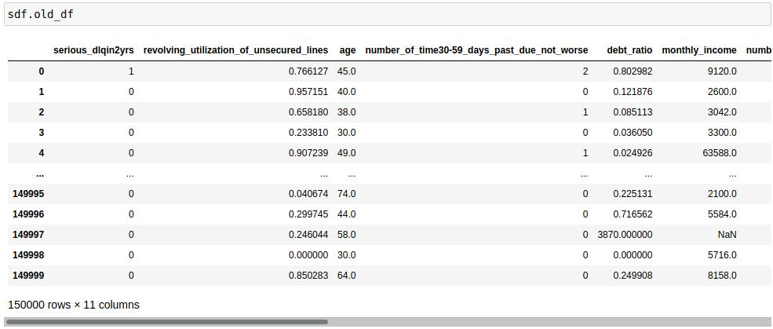

strictdf¶
Dockerfile¶
Build the dockerfile to create an image
docker build - - pull - - no-cache -t jupyter_library .
Once it’s done, run this command to create the container
docker run -d - - name jupyter_library -p 8888:8888 jupyter_library
Then go to the browser and open the url localhost:8888 (The token is “jupyter”)
Pip Installation¶
pip install strictdf==0.1.0
Import¶
from strictdfds import StrictDataFrame

Methods¶
- sdf.report():
Returns the shape of the df and the total of nulls that were removed
- sdf.to_spark():
This method converts pandas df to pyspark df
Attributes¶
- sdf.dtypes
Analyzes all the columns and returns the type of data that is most repeated in each one.
- sdf.old_df
Returns the original df

- sdf.new_df
Returns the df without null values
Libraries¶
Library |
Version |
pandas |
1.0.* |
pyspark |
3.0.1 |
pytest |
5.3.* |
strictdf |
0.1.0 |